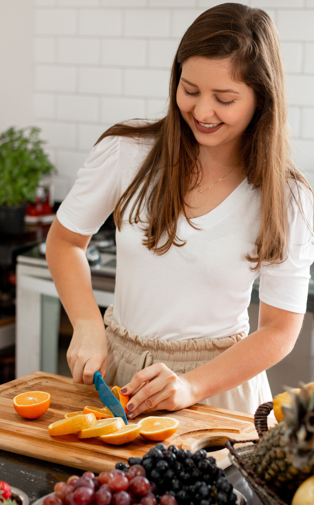
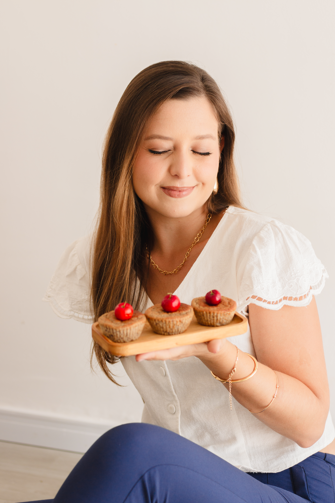
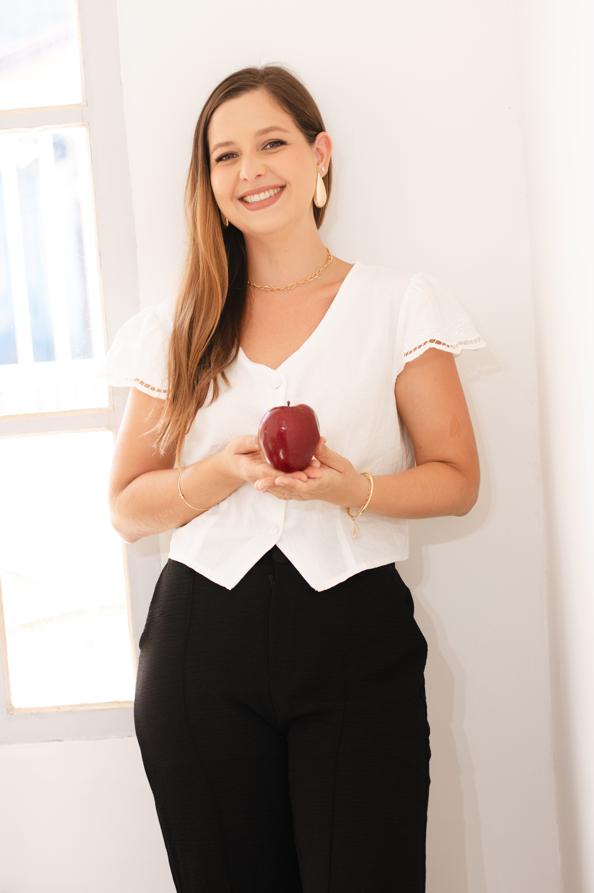
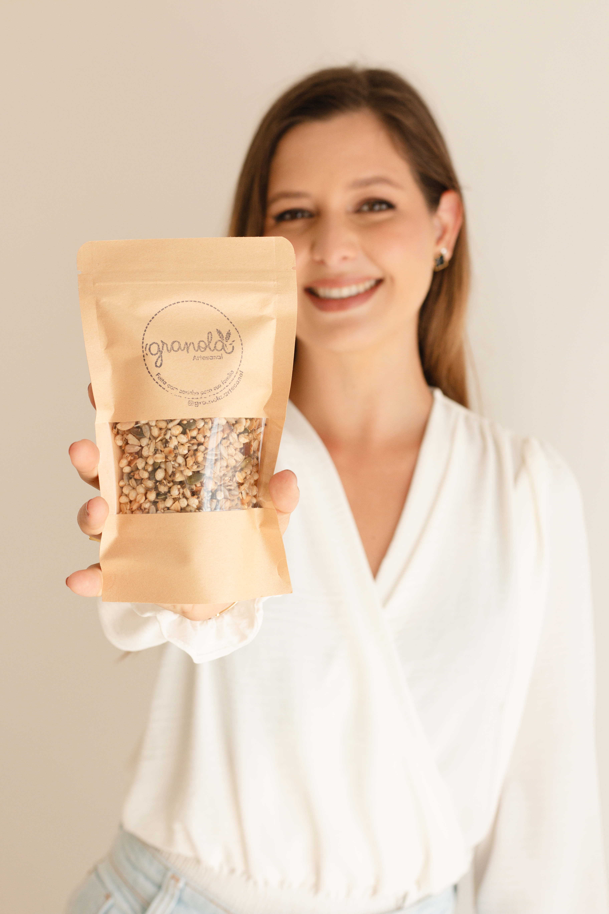
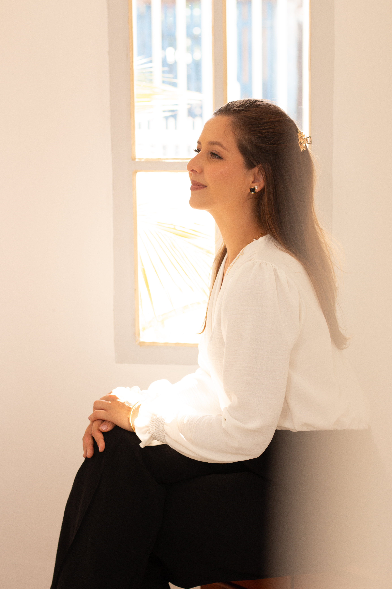

Já na landing · Hero
Cortando laranjas
Lifestyle, movimento, cozinha. Fundo do hero atual.

Já na landing · Sobre
Foto principal sobre
Usada hoje na seção "Quem é a Mayara".
Novo
Close sorriso · jaleco
Sorriso aberto, fundo neutro, vibe profissional + calor humano.
💡 Bom pra: CTA Final (redondo), autoridade, sobre (close)

Novo
Sentada · prato com doces
Olhando pra comida com carinho. Cena afetiva, humaniza.
💡 Bom pra: sobre (casual), transição crenças

Novo
Em pé · segurando maçã
Postura limpa, sorriso aberto, fundo claro. Versátil.
💡 Bom pra: sobre (auxiliar), oferta, qualquer sessão clean

Novo
Mostrando produto
Em ação, segurando algo. Vibe profissional-prática.
💡 Bom pra: seção Oferta (header)

Novo
Perfil · olhando pela janela
Contemplativa, silhueta com luz. Simbólica, emotional.
💡 Bom pra: transição Dor → Inimigo (fundo), momentos de reflexão